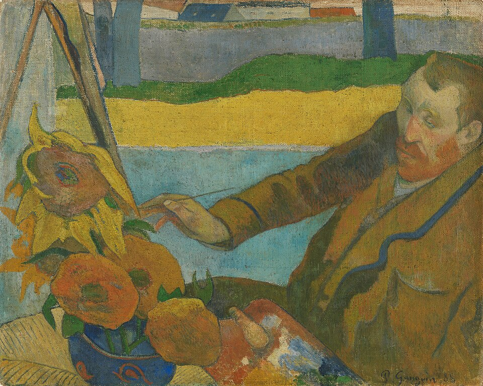

画向日葵的梵高 Vincent van Gogh Painting Sunflowers
高更 · 1888年12月 · 阿姆斯特丹梵高博物馆（文森特·梵高基金会）
Paul Gauguin · December 1888 · Van Gogh Museum, Amsterdam (Vincent van Gogh Foundation)
图片：Wikimedia Commons，公有领域 / Image: Wikimedia Commons, public domain

发现 · Discover
画画的梵高 Van Gogh at work
这是高更画的梵高：他坐在画架前，手里拿着画笔。
This is Van Gogh as Gauguin painted him: seated at his easel, brush in hand.
十二月的向日葵 Sunflowers in December
高更画的真的是梵高在画向日葵吗？不是。当时是12月，向日葵的花期早就过了。
Did Gauguin really paint Van Gogh painting sunflowers? No: it was December, and the blooming season was long over.
临摹自己 Copying himself
不过那段时间，梵高确实临摹了一幅自己画的向日葵。
Around that time, though, Van Gogh did make a copy of one of his own sunflower still lifes.
从高处看 Seen from above
高更是从高处往下看梵高的，所以他看起来有点低、有点斜。
Gauguin looks down on Van Gogh from above, so he appears low and at an angle.
“那确实是我” “It was indeed me”
九个月后，梵高写信给提奥：“我的脸后来明亮多了，但那确实是我，是当时极度疲惫的我。”
Nine months later, Van Gogh wrote to Theo: “My face has lit up after all a lot since, but it was indeed me, extremely tired and charged with electricity as I was then.”
送给提奥 A gift for Theo
画完后不久，高更把这幅画送给了梵高的弟弟提奥。
Soon after finishing it, Gauguin gave the painting to Van Gogh's brother, Theo.
故事 · The story
ACT I 六个星期后 Six weeks on
1888年12月初，高更和梵高已经在黄房子同住了大约六个星期。高更开始给梵高画一幅肖像。
In early December 1888, Gauguin and Van Gogh had been living together in the Yellow House for about six weeks. Gauguin began a portrait of him.
1888年12月 · 阿姆斯特丹梵高博物馆（文森特·梵高基金会） / December 1888 · Van Gogh Museum, Amsterdam (Vincent van Gogh Foundation)
ACT II 想象出来的向日葵 Imagined sunflowers
12月没有向日葵。高更画的，是他心里的梵高：那个画向日葵的人。在高更眼里，《向日葵》是梵高艺术最有力的表达。
There are no sunflowers in December. Gauguin painted the Van Gogh he had in mind: the painter of sunflowers. To Gauguin, the Sunflowers were the most powerful expression of Van Gogh's art.
1888年12月 · 阿姆斯特丹梵高博物馆（文森特·梵高基金会） / December 1888 · Van Gogh Museum, Amsterdam (Vincent van Gogh Foundation)
ACT III 留在梵高家 Kept in the family
12月20日前后，肖像画完了。不久，高更把它送给了提奥。今天，它在阿姆斯特丹梵高博物馆。
Around 20 December, the portrait was finished. Soon afterwards, Gauguin gave it to Theo. Today it is in the Van Gogh Museum, Amsterdam.
1888年12月 · 阿姆斯特丹梵高博物馆（文森特·梵高基金会） / December 1888 · Van Gogh Museum, Amsterdam (Vincent van Gogh Foundation)
那确实是我。 It was indeed me.
作品档案 · Artwork record
| 画家（生卒年） · Artist (dates) | 保罗·高更（1848–1903） / Paul Gauguin (1848–1903) |
|---|---|
| 画名 · Title | 画向日葵的梵高 / Vincent van Gogh Painting Sunflowers |
| 年份 · Date | 1888年12月，阿尔勒 / December 1888, Arles |
| 材质 · Medium | 布面油画 / Oil on canvas |
| 尺寸 · Dimensions | 73 × 91 cm |
| 收藏地 · Collection | 阿姆斯特丹梵高博物馆（文森特·梵高基金会；编号 s0225V1962） / Van Gogh Museum, Amsterdam (Vincent van Gogh Foundation; s0225V1962) |
关于画家 · About the artist
保罗·高更（1848–1903），法国画家。他曾在巴黎做股票经纪人，后来专职画画。1888年秋天，他来到阿尔勒，和梵高在黄房子同住了大约两个月。后来，他去了塔希提。
Paul Gauguin (1848–1903) was a French painter. He worked as a stockbroker in Paris before devoting himself to painting. In autumn 1888 he came to Arles and lived with Van Gogh in the Yellow House for about two months. He later went to Tahiti.